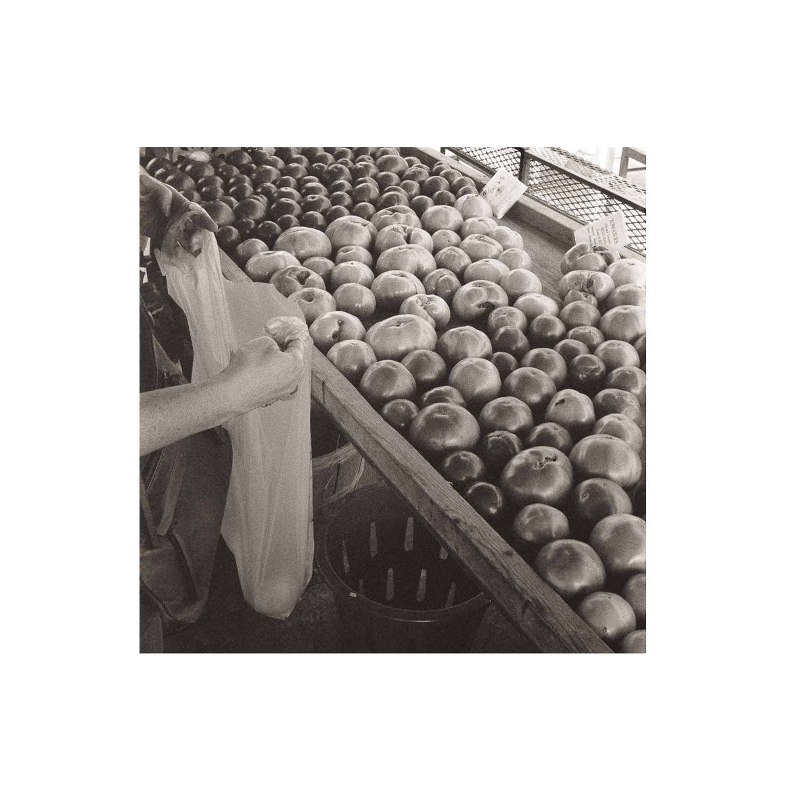
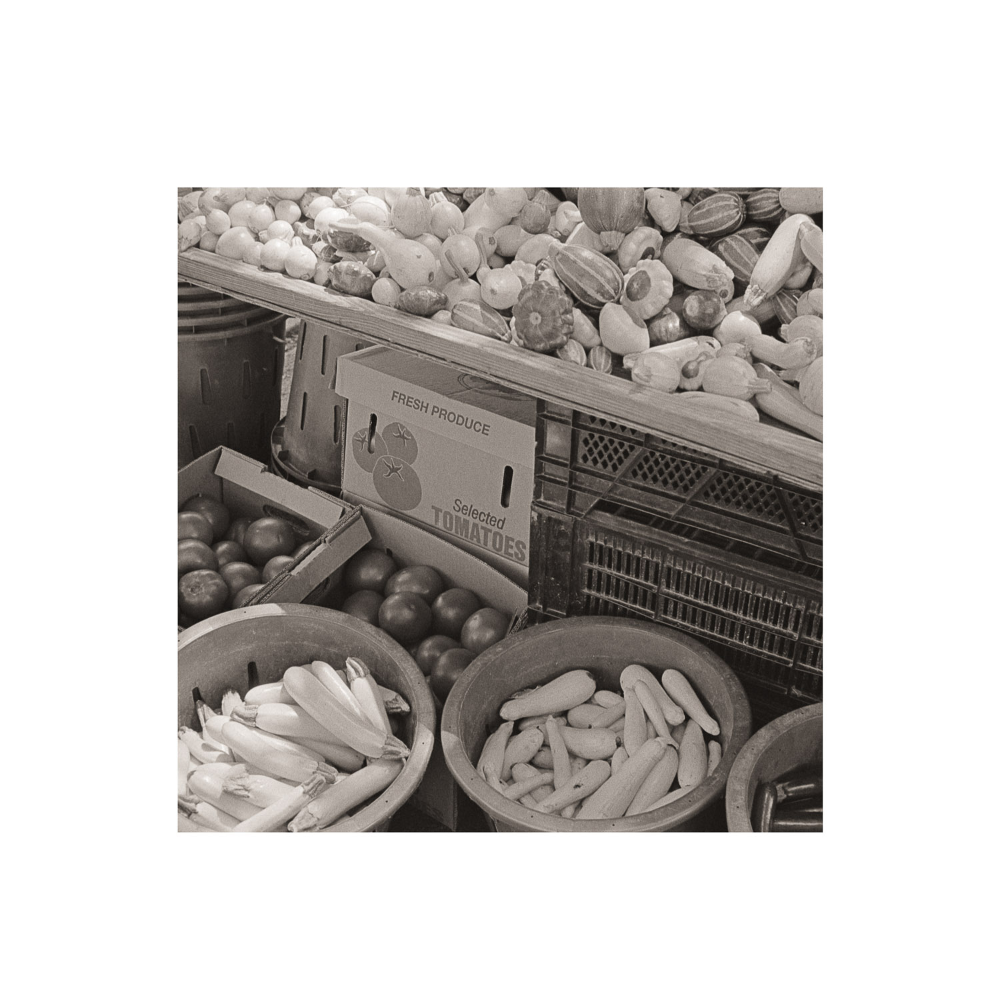
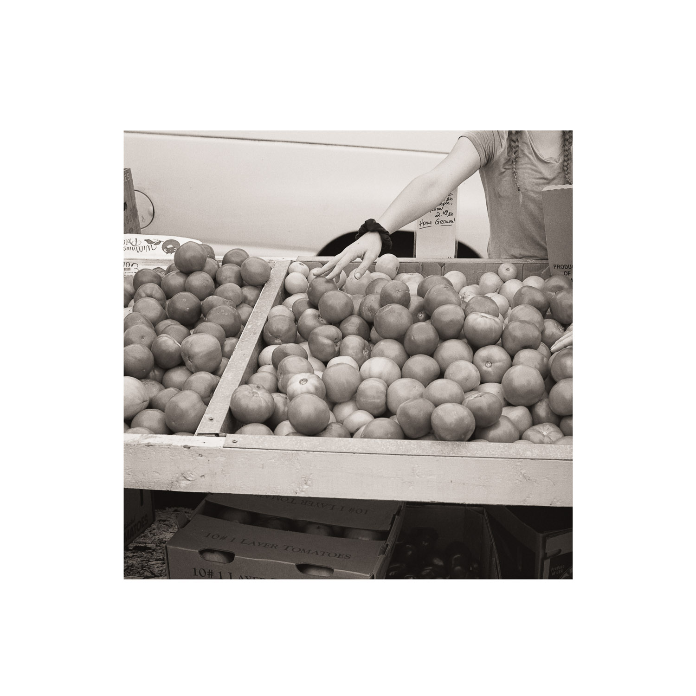
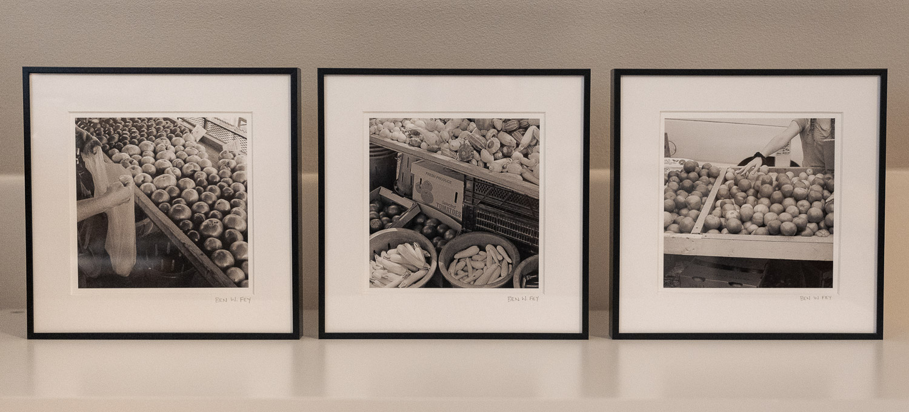
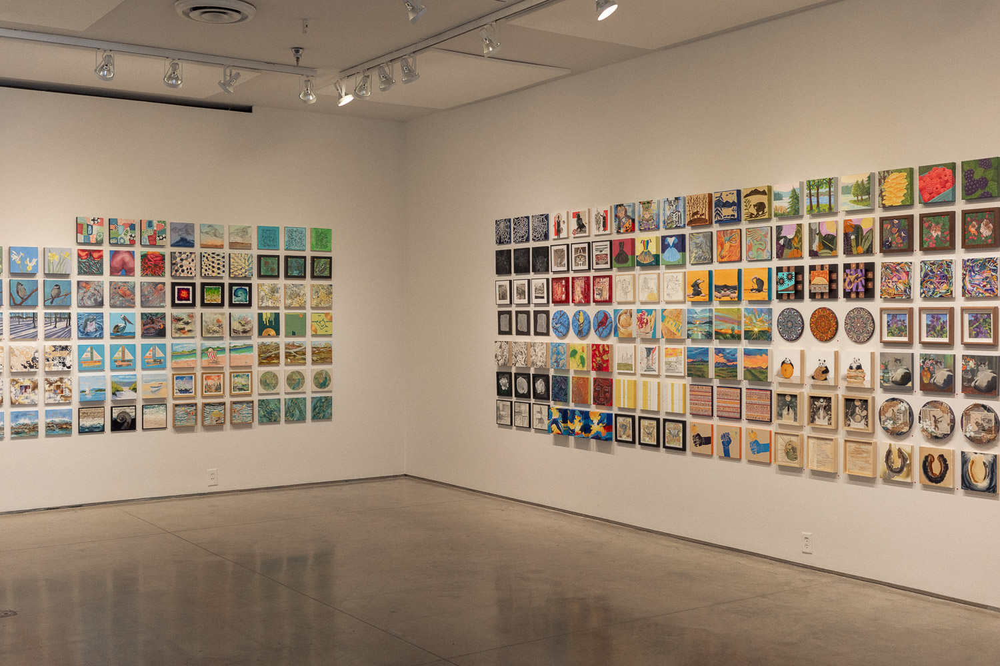
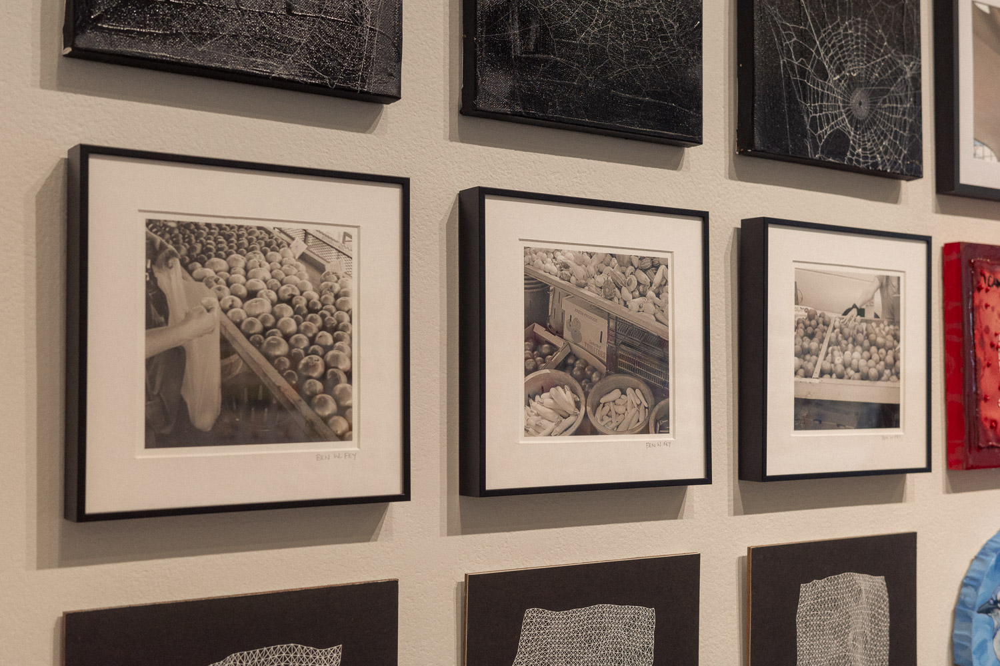

Teeny Tiny Trifecta 8
A group exhibition and fundraiser
5-26 September 2025
Second Street Gallery
Charlottesville, VA
The Exhibition
I was part of a group exhibition with over 200 other artists. Each artist created three works that measure 8" x 8".
Artist Statement
With my photography, I am drawn to the small details and moments around me. For this series, I explore the shapes and textures seen at a farmers market. I love how the weather-worn shelves, boxes, and baskets are overflowing with produce. The photographs in this series are from three different days and even though the farmers market is set up fresh each weekend, there is a similarity between the moments. Photography stops time, allowing us to spend extended time with a fleeting moment. This brings significance to something that could be overlooked. My hope is that my work will help someone slow down and notice the beauty around them. All three photographs are film photographs that have been scanned and edited digitally. The photographs are archival pigment prints on Hahnemüle Photo Rag Baryta paper. The photographs are 5"x5" on 7.75"x7.75" paper and matted in 8"x8" metal frames.
The Photographs


5" x 5" film photograph, digital archival pigment print.


5" x 5" film photograph, digital archival pigment print.


5" x 5" film photograph, digital archival pigment print.





